Wireless Networking and Networking Security

Instructor: Chris Fulton
Learning Objectives
- Differentiate Between Wireless Frequency Bands and Standards
- Plan and Execute Wireless Deployments
- Identify Wireless Security Threats and Implement Mitigations
Wireless Networks
Key Network Terminology
Wireless Access Point (WAP/AP)
Wireless LAN Controller (WLC)
Frequency
Bandwidth
Attenuation
Wireless NIC
Autonomous Access Point
SSID (Service Set Identifier)
EAP (Extensible Authentication Protocol)
Evil Twin
Rogue Access Point
Packet Sniffing
Deauthentication Attack: A Denial of Service (DoS)
Man-in-the-Middle (On-path Attack)
War Driving
THE INVISIBLE ARCHITECTURE
Mastering Modern Wireless Networks: From RF Physics to Wi-Fi 7
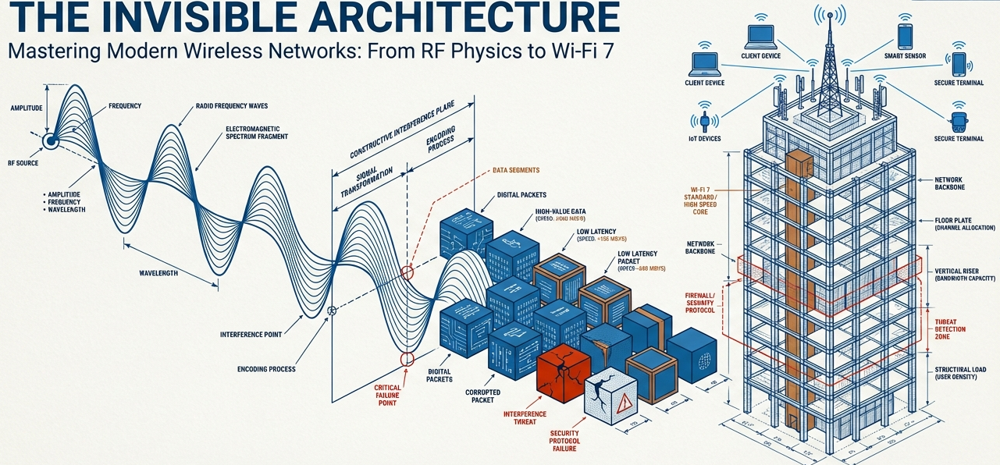Understanding Wireless Network Security and Architecture
💭 Discussion Question
"If you can't see it, can you really secure it?"
- How does the invisibility of wireless networks impact security?
- What makes wireless fundamentally different from wired networks?
- Can wireless ever be as secure as wired connections?
Take 3 minutes to discuss with a partner
THE PHYSICS OF TRAFFIC: Spectrum Landscape
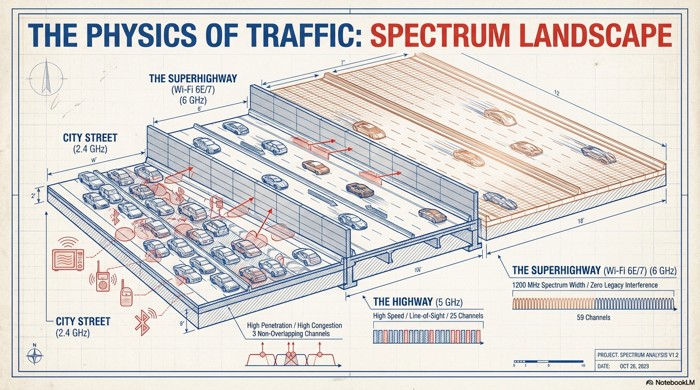Understanding the Wireless Highways:
- 2.4 GHz "City Street": High penetration, high congestion (3 non-overlapping channels)
- 5 GHz "Highway": High speed, line-of-sight (25 channels)
- 6 GHz "Superhighway": 1200 MHz spectrum, zero legacy interference (59 channels)
🎯 Activity: Match the Frequency Band
Drag each scenario to the most appropriate frequency band:
Scenarios (Drag Me!)
Best penetration
Balance of speed/range
Highest speed, no legacy interference
THE EVOLUTION OF SPEED (IEEE 802.11)
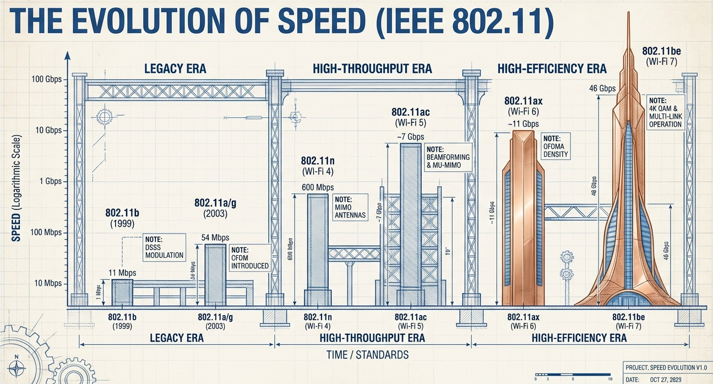Key Milestones:
- 802.11a/g: 54 Mbps (2003)
- 802.11n (Wi-Fi 4): 600 Mbps
- 802.11ac (Wi-Fi 5): 7 Gbps
- 802.11ax (Wi-Fi 6): 11 Gbps
- 802.11be (Wi-Fi 7): 46 Gbps
THE WIRELESS ECOSYSTEM

Beyond Wi-Fi: Understanding the Complete Wireless Landscape
- 5G: Up to 10 Gbps, high density support, millimeter-wave frequencies
- Bluetooth: Classic (audio) vs. BLE (IoT/Low Energy)
- IoT Protocols: Z-Wave, ANT+ (Mesh & Sensors)
THE HARDWARE ANATOMY
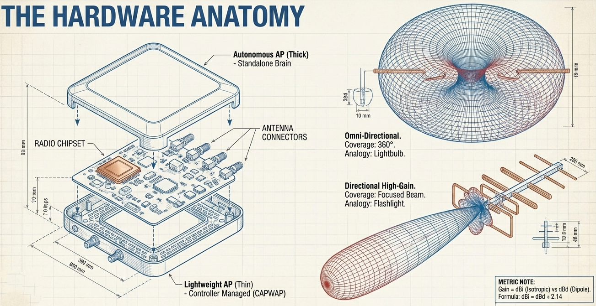Access Point Types:
- Autonomous (Thick): Standalone brain
- Lightweight (Thin): Controller managed (CAPWAP)
Antenna Types:
- Omni-Directional: 360° coverage (lightbulb)
- Directional High-Gain: Focused beam (flashlight)
🎯 Activity: Access Point Deployment
Drag each AP type to the appropriate deployment scenario:
AP Types
NETWORK TOPOLOGIES & MODES
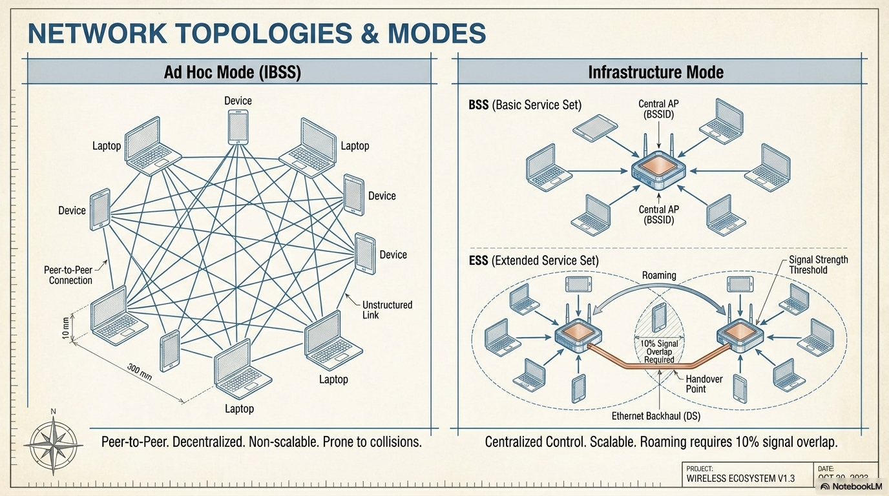Ad Hoc Mode (IBSS)
- Peer-to-Peer Connection
- Decentralized
- Non-scalable
- Prone to collisions
Infrastructure Mode
- Centralized Control (AP)
- Scalable
- Roaming support (10% overlap)
- Extended Service Set (ESS)
THE BLUEPRINT: Site Surveys & RF Planning
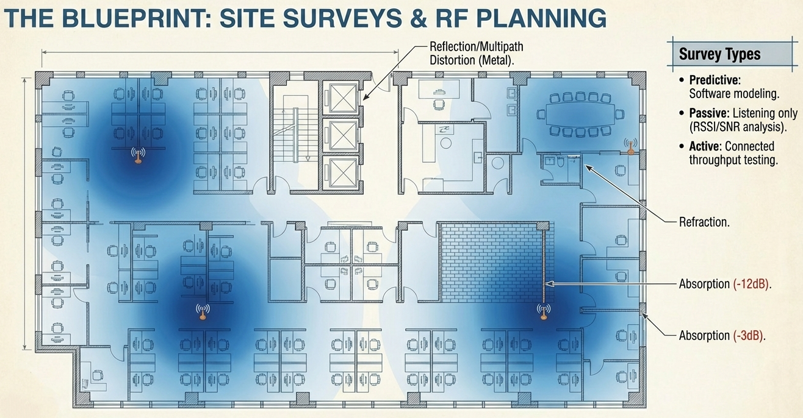Survey Types:
- Predictive: Software modeling before deployment
- Passive: Listening only (RSSI/SNR analysis)
- Active: Connected throughput testing
RF Obstacles: Reflection, Refraction, Absorption (-3dB to -12dB)
💭 Discussion Question
Why is RF planning critical for wireless networks?
- What factors affect wireless signal propagation?
- How does material composition impact RF signals?
- Why can't we just add more access points for better coverage?
Group discussion: 5 minutes
⚠️ WIRELESS SECURITY THREATS
THE INVISIBLE ARCHITECTURE OF VULNERABILITIES
Understanding the unique security challenges of wireless networks
THE SIEGE: The Invisibility Paradox
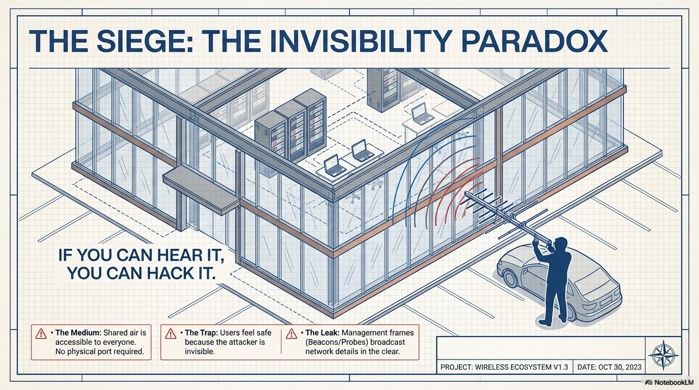"If you can hear it, you can hack it."
- The Medium: Shared air is accessible to everyone (no physical port required)
- The Trap: Users feel safe because the attacker is invisible
- The Leak: Management frames broadcast network details in clear text
PASSIVE ATTACKS: Surveillance
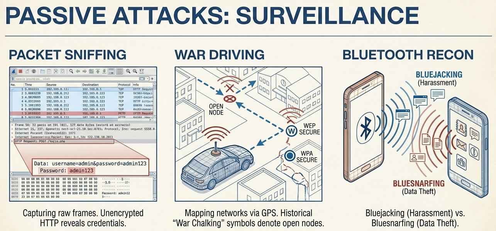Packet Sniffing
Capturing raw frames
Unencrypted HTTP reveals credentials
Wardriving
Mapping networks via GPS
"War Chalking" symbols
Bluetooth Recon
Device discovery
Vulnerability scanning
🎯 Activity: Classify the Threat
Drag each attack type to its category:
Attack Types
(Surveillance/Reconnaissance)
(Direct Interference)
(Identity Spoofing)
THE MASQUERADE: Impersonation Attacks
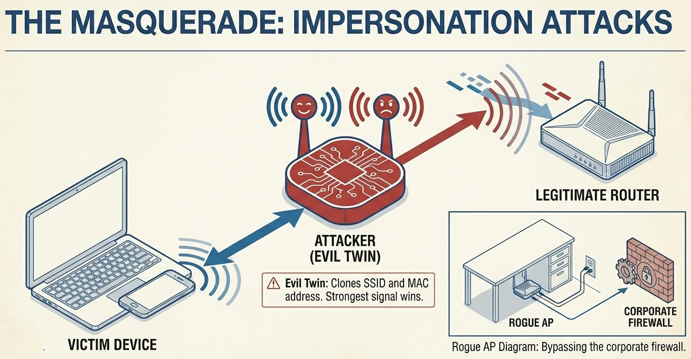Evil Twin Attack:
- Attacker clones legitimate SSID and MAC address
- Broadcasts stronger signal to attract victims
- Man-in-the-Middle (MitM) position achieved
- All traffic flows through attacker's device
DENIAL & DISRUPTION
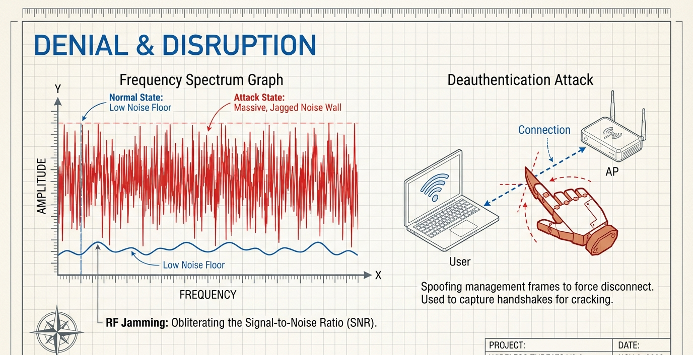Deauthentication Attack
- Spoofing management frames
- Forces client disconnect
- Captures handshakes for cracking
RF Jamming
- Obliterates Signal-to-Noise Ratio (SNR)
- Creates massive noise floor
- Renders wireless unusable
👥 In-Class Activity: Attack Scenario Analysis
Scenario:
A coffee shop offers free Wi-Fi called "CoffeeHouse_Guest". You notice your connection is unusually slow, and when you check available networks, you see two identical SSIDs with the same name but different signal strengths. Some of your colleagues report being disconnected repeatedly.
Questions to discuss:
- What type(s) of attack might be occurring?
- What should you do immediately?
- How could this have been prevented?
- What signs indicate a malicious network?
Break into groups of 3-4: 10 minutes
THE FORTRESS: A History of Failure
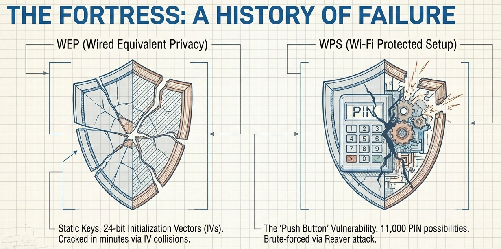WEP (Wired Equivalent Privacy)
- Static keys
- 24-bit Initialization Vectors (IVs)
- Cracked in minutes via IV collisions
- MUST BE DISABLED
WPS (Wi-Fi Protected Setup)
- The "Push Button" Vulnerability
- Only 11,000 PIN possibilities
- Brute-forced via Reaver attack
- Should be disabled
MODERN ENCRYPTION: The WPA Evolution
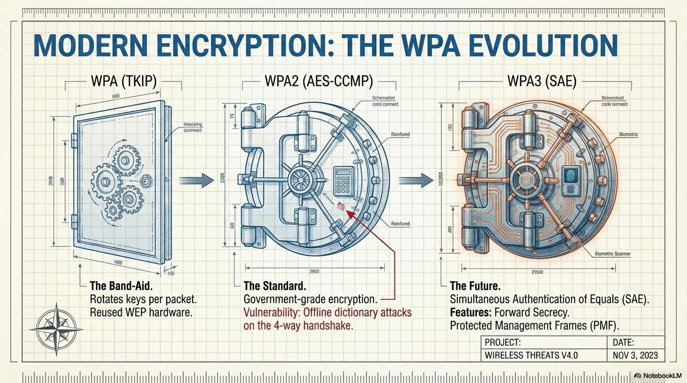| Protocol | Technology | Description | Status |
|---|---|---|---|
| WPA (TKIP) | Temporal Key Integrity | The Band-Aid. Rotates keys per packet. Reused WEP hardware. | Legacy |
| WPA2 (AES-CCMP) | Advanced Encryption Standard | The Standard. Government-grade encryption. Vulnerable to offline dictionary attacks. | Current |
| WPA3 (SAE) | Simultaneous Authentication of Equals | The Future. Forward Secrecy. Protected Management Frames (PMF). | Modern |
🎯 Activity: Match Security Features
Drag each security feature to the correct protocol:
Security Features
DEFENSE IN DEPTH: Enterprise Strategies
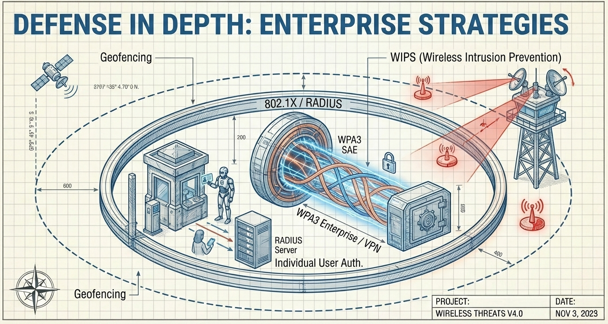Multi-Layer Security Approach:
- WIPS (Wireless Intrusion Prevention): Detect and prevent rogue APs
- 802.1X Authentication: Enterprise-grade user authentication
- Geofencing: Location-based access control
- Network Segmentation: VLANs and ACLs
- WPA3-Enterprise: 192-bit security mode
💭 Discussion Question
Is wireless security always playing catch-up?
- Why does wireless security seem to follow attack discovery rather than prevent it?
- Can we ever achieve "proactive" wireless security?
- What role does user education play in wireless security?
- Should public Wi-Fi networks be considered inherently insecure?
Partner discussion: 4 minutes
THE FUTURE OF THE FORTRESS
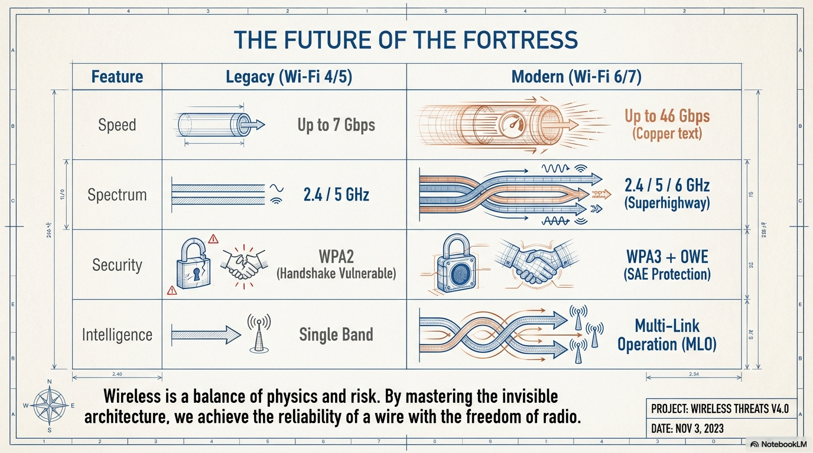"Wireless is a balance of physics and risk."
By mastering the invisible architecture, we achieve the reliability of a wire with the freedom of radio.
🏗️ Final Project Activity: Design Your Wireless Network
Scenario:
You are designing a wireless network for a 3-story office building with 200 employees. The building has a mix of conference rooms, open office spaces, and individual offices.
Requirements:
- Select appropriate frequency bands for different areas
- Determine AP placement and antenna types
- Choose security protocols and authentication methods
- Plan for guest network isolation
- Consider IoT device requirements
- Address potential security threats
Deliverable: Create a network diagram and justify your design choices.
Groups of 4: 20 minutes + 5 min presentation
🎓 Knowledge Check
- What are the three main frequency bands used in modern Wi-Fi?
- What is the difference between an Autonomous AP and a Lightweight AP?
- Explain the "Invisibility Paradox" in wireless security.
- What makes Evil Twin attacks effective?
- Why was WEP considered fundamentally broken?
- What improvement does WPA3 provide over WPA2?
- What is the purpose of a WIPS system?
📚 Additional Resources & Next Steps
Recommended Tools for Learning:
- Wireshark: Packet analysis and protocol understanding
- inSSIDer: Wi-Fi network scanner and analyzer
- Ekahau: Professional site survey software
- Aircrack-ng: Wireless security auditing (ethical use only)
Further Study Topics:
- Wi-Fi 7 (802.11be) features and deployment
- Enterprise RADIUS authentication
- Wireless mesh networking
- 5G and Wi-Fi convergence
- IoT security in wireless environments
🎯 Key Takeaways
- ✅ Wireless networks operate across multiple frequency bands (2.4GHz, 5GHz, 6GHz)
- ✅ RF planning and site surveys are critical for optimal performance
- ✅ Wireless security is fundamentally different from wired networks
- ✅ The "invisibility" of wireless creates unique vulnerabilities
- ✅ Multiple layers of defense are essential (Defense in Depth)
- ✅ WPA3 and modern protocols address legacy vulnerabilities
- ✅ Understanding the physics of RF is crucial for network design